Sykepeleier-oppgaver
➡️ Elink
Sjekke epikriser, svare på innleggelserapporter, henvendelser fra fastleger/ sykehus o.l.
➡️ Tiltaksplaner
Oppdater tiltaksplaner der det er aktuelt. Gå gjennom brukere du er TA for og gjør evt. endringer
➡️ Kommunikasjon
Pasientnett, epikriser/journal/medisingylle sjekkes daglig. Gamle epikriser skannes i Gerica. Be om opplæring hvis du ikke er kjent med det.
➡️ Medisinrom
Ta ut A og B preparater til neste dag, gå gjennom utstyr og sårutstyr og skriv opp på liste om noe mangler, rydde narkoskap og send tilbake gamle medisiner
➡️ OL-beskjedjournal
Se gjennom OL beskjeder for å danne en oversikt
➡️ Rapporter og praktiske oppgaver
Gjennomgang av aktuelle problemstillinger fra rapport. Utføre praktiske oppgaver knyttet til dette
➡️ Multidoseimport
Fullfør Multidoseimport hver torsdag i multidose uker
➡️ Medisinering
Legg inn medisinendringer for aktuelle brukere på Gerica
- Klikk på aktivitet
- Klikk på arbeidsplanlegging
- Velg rapport
- Deretter arbeidslister per ansatt
- Ansatt: Mulighet for å kunne skrive ut arbeidslister for en gitt ansatt eller rute. Trykk F4 i verdifeltet og søk opp ansatt. Hvis det skal skrives ut arbeidslister på flere ansatte eller ruter, så fylles ikke feltet ut
- Nivå:
- Type tjeneste:høreklikk eller trykk på F4 for å søke opp i nivåetre
- Fra/til dato: Datoen du skal skrive ut lister for.
- Hent frem ansattes navn ved å høyreklikke i ansattfeltet og husk og skriv etternavn først. Deretter er det viktig å skrive dato for arbeidslisten. Dersom ansatt jobber dobbelvakt må du skrive inn klokkeslett for å unngå en hel arbeidsliste for hele dagen. Helt til slutt må du taste ikon for skriver øverst til venstre.
- Hvis det skrives ut arbeidslister for flere ansatte eller ruter, så vil oppdragene i aktuell periode komme opp som er fordelt på ansatte/rute
- Fra/Til klokke/utført: Sett inn tidspunkt. Oppdrag som starter innen for gitt kl.slett blir med
- Bachnr: Evnt. sett inn sats/bach nummer(kun per tjenestetype)
- Tast ikon for skriver slik at du får ut arbeidslisten.

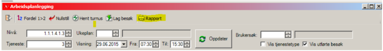
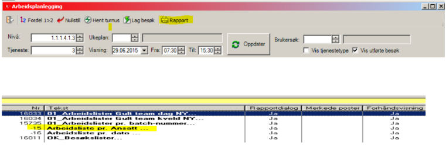
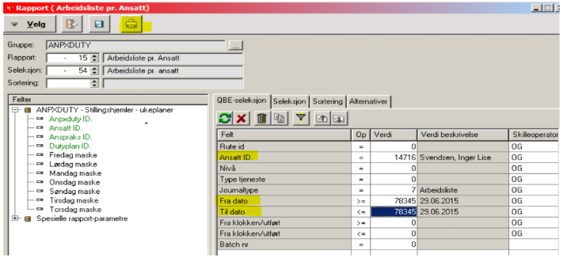
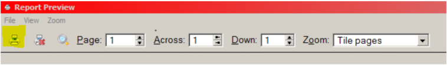
- Klikk på brukeroversikt i gerica
- Finn riktig bruker
- klikk på journal
- Klikk på "Ny
- Velg journaltype 7, og trykk på tab
- Høyrklikk på tjeneste, velg hjemmesykepleien
- Sett inn riktig dato og klokkeslett
- Sett inn tiltak: trykk på "ny" - høyreklikk på tiltakstype- finn riktig tiltak-legg inn tid


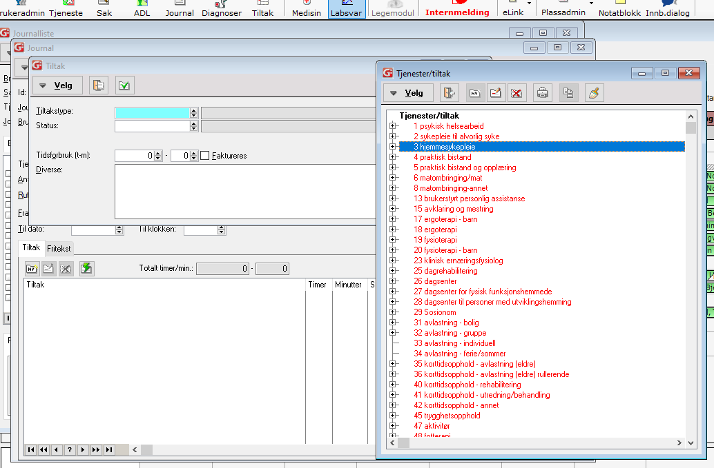

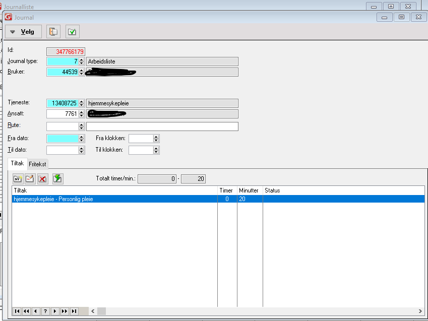
- Klikk på aktivitiet- øverst i siden
- i feltet "tjeneste", ser du bare tallet 3 som er hjemmesykepleien, velg høyreklikk på feltet for å få alle tjenestene opp
- Velg: hjemmesykepleie(tjeneste 3), praktisk bistand(tjeneste 4) og avklaring og mestring(tjeneste 15?)
- Velg dato og om du vil se på dag eller kvelds-ruter. 0730-15 eller 15-22
- Klikk på ok og oppdater siden ved å klikke på oppdater-knappen
- Nå ser du alle ruter og besøkene per rute for valgt dato
- Velg og høyreklikk på ansattes navn
- Navnet til alle ansatte som er på jobb, kommer opp
- velg riktig ansatt og flytt alle besøk
- Hvis du skal velge en ansatt som ikke har arbeidsliste: velg en "annen ansatt" og da kan du skrive etternavnet til den ansatte, besøkene skal flyttes til
- ***Viktig*** Ikke glem å velge alle tjenestene som skal bli med, DVS nr 3, 4 og 15

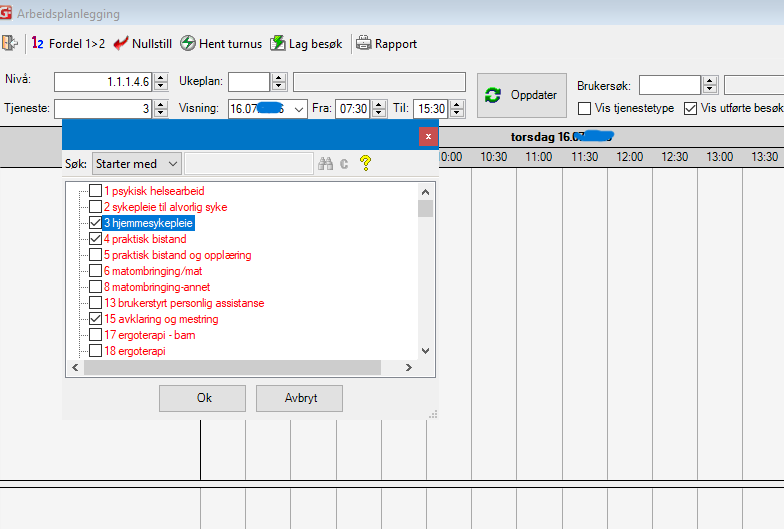

- Klikk på journal-ikonet øverst på siden
- Et nytt vindu åpner seg, klikk på printer-ikonet
- Skroll ned i det nye vinduet som åpner seg
- Velg ol-Rapport-hjemmesykepleie Ny(dobbelklikk på den)
- velg nivå: dobbelklikk i feltet nivå, høyreklikk og velg hjemmesykepleie team Sør
- Velg Fra/Til dato
- Klikk på printer-ikonet
- Vent til journalene kommer på skjermen, det kan ta noen sekunder
- Klikk på printer. Riktig printer er printix-anywhere
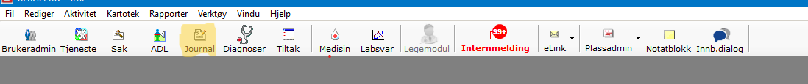
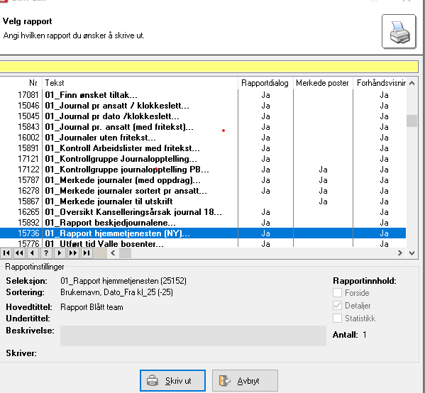
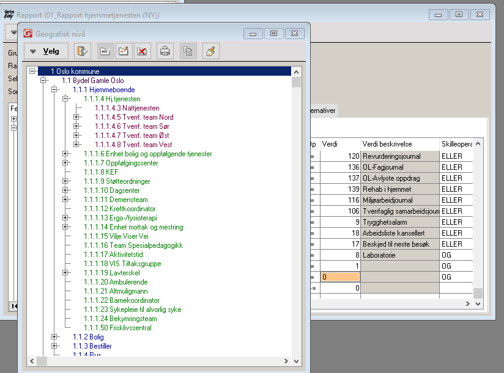
- Klikk på brukeroversikt i gerica. Finn og velg brukers navn
- Klikk på tjeneste
- Klikk på tiltak og deretter "ny"
- Velg riktig tiltak
- velg tiltaket og klikk på ny. vindu for tidsplan kommer opp
- Velg startdato, tidspunkt og rute

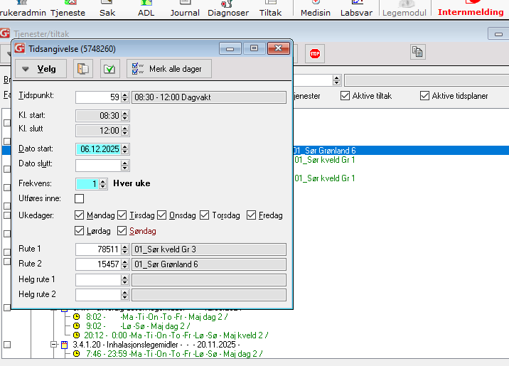
Velg bruker i brukeovesikt
Klikk på tiltak øverst i siden

i tiltak-vinduet, kan du ldge/sette/endre:
situasjon/tidsplan/nødvendig kompetanse/nivå/tidsestimat/antall utførere/nivå/prosedyre
på tiltakene.
Du kan også avslutte tiltak
-- Lag ny situasjon:
Klikk på "+" tegnet
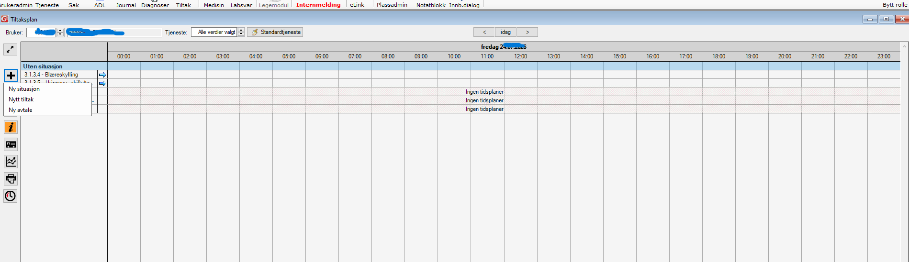
Høyreklikk i feltet "situasjonstype"

Velg riktig situasjon og lagre
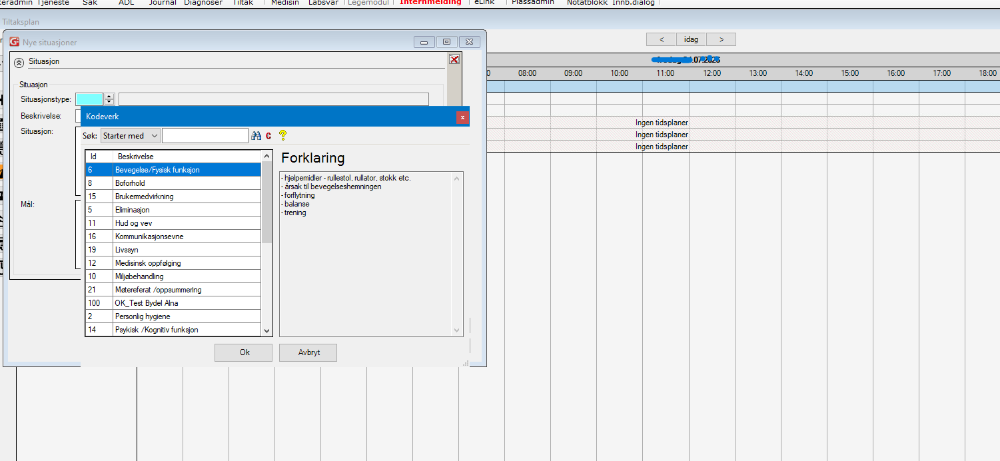
Velg riktig situasjon og lagre
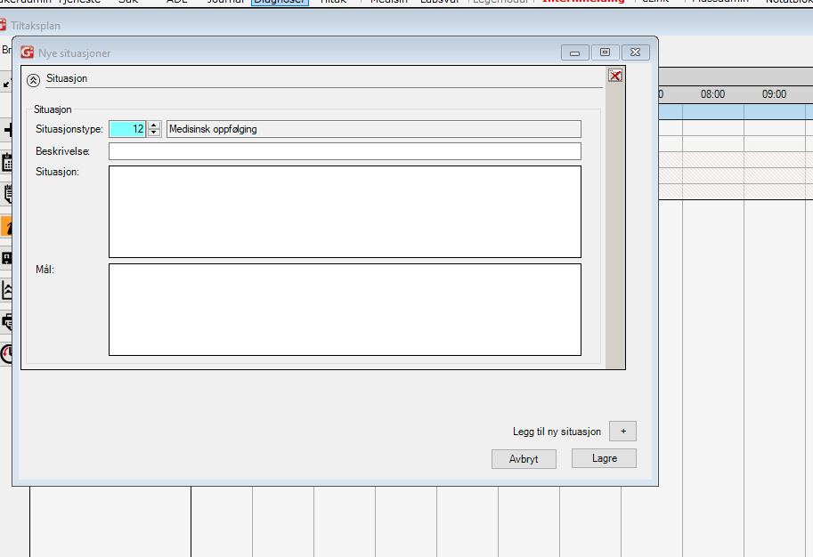
Høyreklikk på tiltaket du vil sette situasjonen på -> Bytt situasjon

Endre prosedyre

Endre kompetanse
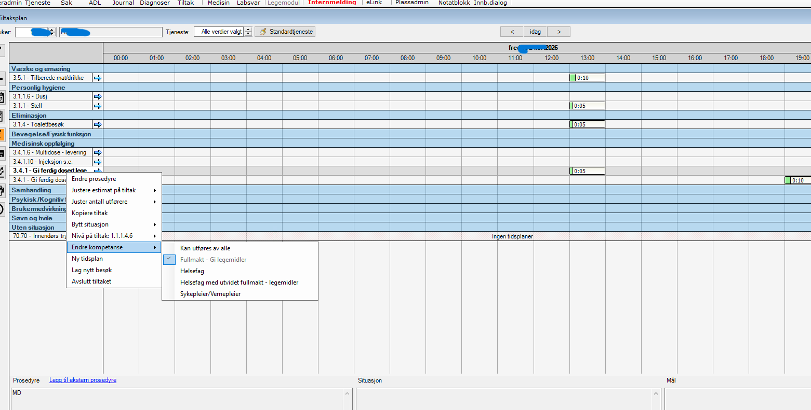
Endre nivå på tiltaket

Bruk "justere estimat" for å sette tidsplan på tiltaket
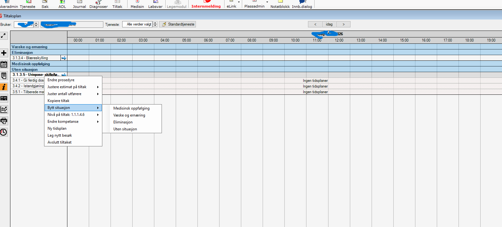
- Her kan du også se fremtidige genererte oppdrag
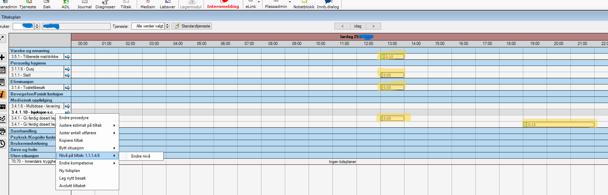
➡️ Finn riktig bruker
➡️ Klokk på medisin
➡️ Klikk på doseringsliste kompakt

➡️ Skriv ut
➡️ Husk å velge riktig printer: printix anywhere
Kommer snart
Sjekk ansvarstelefon og dignio for varsler og behandle disse hver vakt. Dokumenteres i Gerica
- ➡️
- ➡️
- ➡️
- ➡️
- ➡️
- ➡️
På multidosedagen team Sør(ulike uker)
➡️ sykepleiere begynner med å multidoseimport (før multidosene blir levert)
➡️ Bytt rolle til multidoseimport
➡️ Klikk på medisinering, en liste over brukere som trenger multidoseimport kommer opp(det er et konvolut-ikon ved siden av navnet)
➡️ Ordinasjonskortene er blitt oppdatert av apoteket på Gerica og de er de samme kortene som vi får levert senere på dagen
➡️ Ikke alle med konvolut-ikon, har medisinendringer. Apoteket oppdaterer ordinasjonskortene en gang i måned? og da vises ikonet
➡️ Begynn fra øverst i lista og sjekk om medisinene er riktige før du importerer
➡️
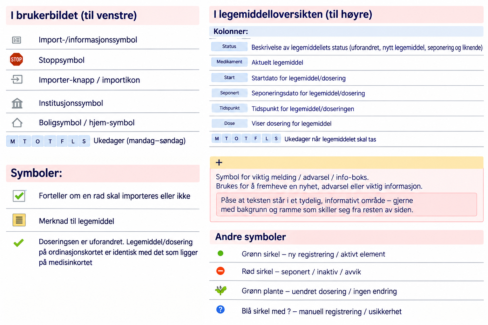
➡️ Forklaring for symbolene:
- - Seng/institusjonssymbol: Pasienten har eller har nylig hatt institusjonstjeneste (korttids- eller langtidsopphold).
- - Grønn hake: Legemiddelet og doseringen på ordinasjonskortet er identisk med det som allerede ligger i Gerica.
- - Gult notatark: Det finnes merknad eller tilleggsinformasjon knyttet til legemiddelet.
- - Grønn sirkel med pluss: Legemiddelet eller doseringen finnes på ordinasjonskortet, men ikke i Gerica.
- - Rød sirkel med minus: Legemiddelet finnes i Gerica, men ikke på nytt ordinasjonskort.Hva skal vi gjøre?????
- - Grønt «abc»-symbol / plante-lignende symbol: Doseringen er uendret, men merknaden er endret.
- - Blå sirkel med «i»: Legemiddelet er registrert manuelt i Gerica som multidoselegemiddel, men finnes ikke på ordinasjonskortet. Hva skal vi gjøre??????
- --- Vurder nøye om legemiddelet skal beholdes eller seponeres.
- --- Kontroller ordinasjonskort og legens ordinasjon.
- --- Vær ekstra oppmerksom ved legemidler som er lagt inn manuelt.
- - Blått spørsmålstegn: Medisisne er blitt manuelt registrert i Gerica av en medarbeider. Kontroller om de har kommet i ordinasjonskortet med en grønn hakke ved siden av.Sammenlign også siste epikrise.
Gerica mangler tilstrekkelig strukturert informasjon til å gjennomføre full automatisk oppdatering.Hva skal vi gjøre????
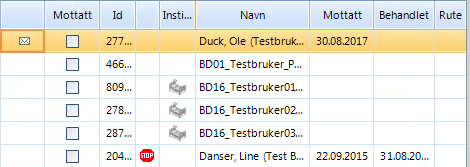
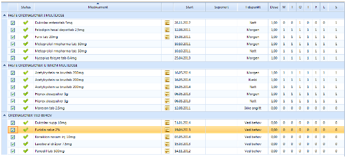
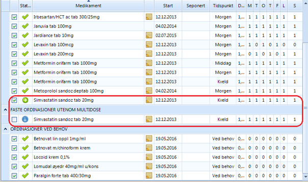
➡️ Etter at multidosene er blitt levert: Ta boksene til grupperommet
➡️ Nå er medisinene som er blitt imporeter er riktige i Gerica og vi kan kontrollere multidosen mot dem
➡️ Finn riktig bruker, åpne medinkortet i Gerica
➡️ Sammenlign første dag av hver multidoserull med medisiner i Gerica og sett hakke foran de som er riktige
➡️ Sorter rullene som skal sendes til bruker og de som skal beholdes på medisinrommet og legges i bakkene
➡️
➡️
➡️
➡️
Fra EQS:
Det er stor risiko for feil ved multidoseimport, og importen bør gjennomføres av faste medarbeidere som har fått opplæring og forstår prosessen rundt multidoseimporten.
Ansvar: Sykepleier/vernepleier/farmasøyt
Bytt til riktig rolle for å kunne jobbe i multidoseimport-bildet. Følg rutine for bestilling og mottak multidose før utføring av multidoseimport: DokumentLegemiddelhåndtering - Multidose - Oppstart, bestilling, mottak og avvikling. Sett av tilstrekkelig tid til multidoseimport på et tilrettelagt sted uten forstyrrelser. Ha tilgjengelig to PC-er og eventuelt en LMP for å kontrollsjekke legemiddellisten etter import. Dette er spesielt viktig for å sjekke om legemidler som tas fast utenom multidoserull vises med riktig dose og tidsplan. Ha fysisk ordinasjonskort tilgjengelig og se på endringsrapporten for å forstå årsaken til endringene, og få et helhetlig overblikk. Sjekk om endringene samsvarer med pasientens sykehistorie og nåværende status (se steg 4).
Ny pasient med multidose - første gang det gjøres multidoseimport
Første gang det utføres multidoseimport, kan det komme en lang og uoversiktlig legemiddelliste.
Det anbefales sterkt at legemiddellsamstemming er utført, og at både fastlegen og pasienten/pårørende har bekreftet/avkreftet hvilke legemidler som er i bruk på det gjeldende tidspunktet.
Sjekk kjernejournal for å se på historikken, utstedelse av e-resepter og uthenting av legemidler som er gjort det siste året. Hyppigheten av legemidler hentet på apoteket kan gi en indikasjon, men ikke fasit, på hvordan legemidlene blir brukt (ofte/for sjeldent/ikke i det hele tatt).
Ta kontakt med fastlegen ved tvil.
Klikk på madisin-knappen, velg Multidoseimport
Da kommer dette bildet opp (brukerbilde til venstre og legemiddeloversikt til høyre):

Se igjennom brukerbildet og legemiddeloversikten for å få et helhetlig bilde over:
hvem som er innlagte på korttids-/langtidsinstitusjoner
nye innmeldte pasienter
multidoseleveranser som er satt på midlertidig stopp
Se her for forklaring av kolonnene og symboler i oversikten
Venstre side i multidoseimportbildet viser oversikt over alle pasienter. Pasienten kommer med på multidoseimportlisten i tilfeller der pasienten har:
et legemiddel i medisinkortet som er merket som multidose
mottatt ordinasjonskort som enda ikke er importert
Nullstill avkrysningskolonnen "Mottatt" ved å trykke på .
Huk så av avkrysningsboksen "Mottatt" for hver multidoserull som er fysisk mottatt fra apoteket.
Gå gjennom ordinasjonskortet på papir og sammenlign med eksisterende legemiddelliste.
Sjekk eLink for endringer fra fastlegen.
Vurder endringer som fastlegen ikke har informert om (eksempel: nye legemidler, endring av dose eller seponeringer). Kan endringene/avvikene skyldes gammel legemiddelliste fra siste innleggelse/ikke oppdatert legemiddelliste med gammel informasjon?
Sjekk kjernejournalen for nye resepter som kan bekrefte/avkrefte ny informasjon i epikrisen/endringene fra fastlegen.
Informer fastlegen om nye endringer eller eventuelle feil, og be om at det sendes ny oppdatertlegemiddelliste til multidoseapotek.
Sørg for å ha tilstrekkelig med legemidler og be om e-resept ved påbegynt behandling før ny multidose er pakket.
Dokumenter viktige endringer i 136-fagjournal i Gerica og informer pasient/pårørende.
Utfør multidoseimport ved å huke av for riktige legemidler som skal importeres, slik at legemiddellisten og informasjonen knyttet til legemiddelbruken vises riktig i Gerica.
Vær nøye med å se på hvert symbol som står foran det enkelte legemiddelet og hvilken betydning det har for hva som skjer med det enkelte legemiddelet/dosering ved import av ordinasjonskortet til pasientens legemiddelliste (se detaljert beskrivelse av symboler for status i multidoseimport bildet).
OBS! Dersom informasjonen om hvordan legemiddelet skal brukes er lagt inn manuelt i Gerica, pass på å huke av for riktig linje slik at viktig informasjon ikke blir slettet etter importen.
Husk å ta multidoseimport på multidoserullene som kommer til tjenestestedet utenom vanlige multidoseleveranser (eksempel: hastebestillinger, nye pasienter til avdelingen).
Dersom multidoseimport ikke er mulig å gjennomføre, må alle legemidler skrives manuelt inn i Gerica.
NB! Dersom et legemiddel er lagt inn manuelt, vil legemiddelet ligge dobbelt i sammenstillingsmodulen når det mottas nytt ordinasjonskort hvor dette legemiddelet er lagt inn. Det er da viktig å sette hake for å seponere den manuelle registreringen med symbol slik at legemiddelet kun kommer opp en gang i legemiddellisten i Gerica.
Sjekk alltid legemiddellisten i Gerica etter at multidoseimporten er utført.
Alle legemidler pasienten bruker skal gis etter skriftlig ordinering fra legen. Hvis det ikke foreligger en slik ordinering, skal de ikke stå på legemiddellisten og skal heller ikke gis til pasienten.
Gjør manuelle endringer i legemiddellisten i Gerica etter utført multidoseimport hvis det er behov for å:
legge til nytt legemiddel
seponere legemiddel
Sjekk at legemidler utenom multidose ligger riktig under faste/daglige inntak og eventuelle legemidler.
Sjekk om alle legemidler ved behov står på ordinasjonskortet. Hvis et legemiddel som ikke er brukt over lengre tid skal fjernes, eller et nytt legemiddel som ikke står der skal oppføres, skal dette bekreftes/avkreftes av fastlegen først, og endringene skal sendes til multidoseapotek ved første anledning.
Sjekk på LMP at dose og tidspunkt er riktig etter multidoseimport for legemidler utenom multidose. Vises ikke dette riktig på LMP må legemiddelet seponeres først, og så legges inn på nytt med riktig dose og tidsplan.
Eksempler på ikke-strukturert tekst som kan sendes fra legen og hvor det er stor risiko at det vises feil på LMP er legemidler som:
skal gis flere enn fire ganger daglig (parkinsonmedisin)
brukes etter avtale med legen (inhalasjoner og insulin)
Oppdater legemiddellisten slik at den samsvarer med legemidlene som skal gis til pasienten.
Det følger med to nye ordinasjonskort ved endringer
På tjenestestedet (medisinrom eller annet låst rom)
Ta ut gammelt ordinasjonskort fra perm.
Legg nytt ordinasjonskort (der endringene står forklart) i egen perm.
Makuler gammelt ordinasjonskort.
Ta med nytt ordinasjonskort (det uten endringene) hjem til pasient.
Ta med gammelt ordinasjonskort tilbake til kontoret.
Makuler gammelt ordinasjonskort.
Dokumenter at du har lagt igjen nytt ordinasjonskort.
Oppdatert ordinasjonskort skal ligge hjemme hos pasient slik at pasient/pårørende og eventuelt annet helsepersonell ved behov, kan få oversikt over legemidler pasienten bruker. Det er viktig å ha oppdatert ordinasjonskort/legemiddelliste hjemme hos pasienten i tilfeller der LMP ikke fungerer, systemet er nede eller pasient får besøk av legevakt.
Medarbeidere skal ta utgangspunkt i legemiddellisten i Gerica når de deler ut legemidler hos pasient. Ordinasjonskortet kan også brukes til å skaffe seg en oversikt over alle legemidlene og for å finne bilde av legemidlene som ligger i multidoseposene.
Ansvarlig: Annen sykepleier/vernepleier/farmasøyt enn den som utførte multidoseimporten
Utfør alltid dobbeltkontroll av multidoseimport Journalfør i Gerica.
Følgende tiltak brukes ved multidoseimport, og skal være et aktivt tiltak hos alle pasienter der multidoseimport skal utføres:
x.4.2.9 Multidose - kontrollere
x.4.2.10 Multidoseimport og dobbeltkontroll
Fjern legemiddel som skal seponeres og destruer.
Legg legemidlene over i dosett. Posene skal ikke klippes og tapes igjen.
Utfør alltid dobbeltkontroll av seponeringen.
Journalfør i Gerica. Følgende tiltak kan brukes:
x.4.2.11 Seponering fra multidose
x.4.2.12 Kontroll av seponering fra multidose
Ferdigkontrollerte multidoserullene fordeles til ansatte etter arbeidslister/ruter og tas med ut til pasientene.
Journalfør i Gerica. Følgende tiltak kan brukes:
x.4.1.6 Multidose levering
tiltak x.4.1.6 Multidose – levere (alle pasienter som tjenesten mottar multidoseruller på skal ha dette tiltaket)
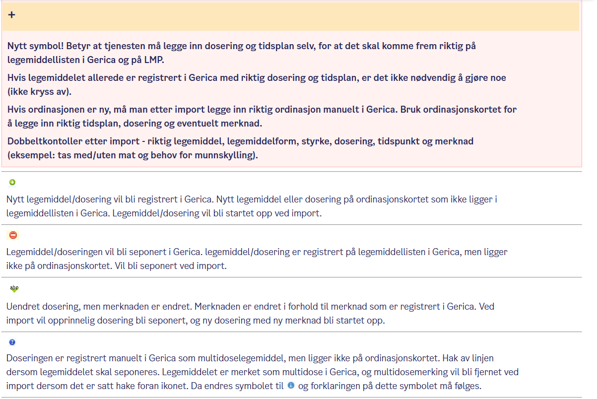
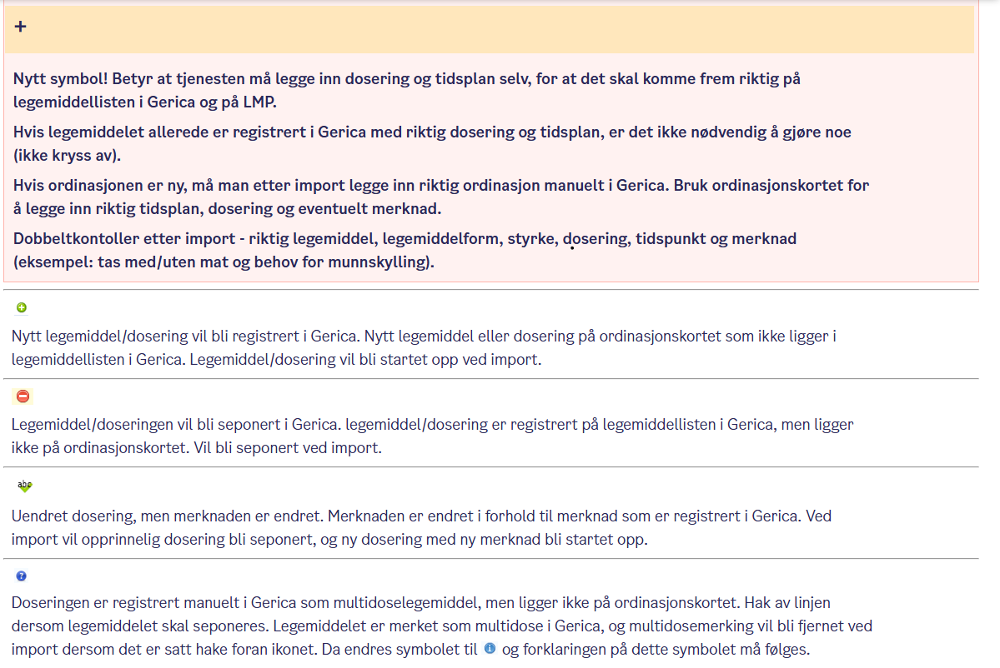


- ➡️
- ➡️
- ➡️
- ➡️
- ➡️
- ➡️
| Fysiologiske parametere | 3 | 2 | 1 | 0 | 1 | 2 | 3 |
|---|---|---|---|---|---|---|---|
| Respirasjonsfrekvens (per minutt) | <= 8 | 9-11 | 12-20 | 21-24 | >=25 | ||
| SpO2, Skala 1 (%) | <= 91 | 92-93 | 94-95 | >= 96 | |||
| SpO2, Skala 2 (%) | <= 83 | 84-85 | 86-87 | 88-92 >= 93 på luft | 93-94 | 95-96 på oksygen | >=97 på oksygen |
| Luft eller oxygen | Oksygen | Luft | |||||
| Systolisk blodtrykk (mmHg) | <= 90 | 91-100 | 101-110 | 111-219 | >= 220 | ||
| Pulsfrekvens (pr. minutt) | <= 40 | 41-50 | 51-90 | 91-110 | 111-130 | >= 131 | |
| Bevissthetsnivå | A | C, V, P, U | |||||
| Temperatur | <=35,0 | 35.1-36.0 | 36,1-38,0 | 38,1-39,0 | >=39,1 |
| Bevissthetsnivå | Skala 2: |
| A= Alert (Våken) | Lege skal dokumentere i journal når skala2 skal brukes. Ved alle andre tilfeller brukes Skala1 |
| C: Confusion (Nyoppstått forvirring) | |
| V: Voice (reagerer på tiltale) | |
| P: pain (reagerer på smertestimulering) | |
| U: unresponsiv (reagerer ikke på tale- eller smertestimulering) | VED HJERTESTANS RING 113 OG START HLR |
| NEWS-skår | Overvåkningsfrekvens | Klinisk respons | Fare for mortalitet |
|---|---|---|---|
| 0 | Minimum hver 12 time | Følg rutinene for MEWS2 overvåkning ved ditt arbeidssted | Lav |
| Totalt 1-4 | Maksimum hver 4-6 time | -Informer ansvarlig sykepleier/helsepersonell på vakt om NEWS2 skår -Ansvarlig sykepleier/helsepersonell tar stilling til økt overvåknings-frekvens, behov for klinisk tiltak og/eller legevurdering |
Lav |
| Skår 3 i ett parameter | Minst en gang per time | - Ansvarlig sykepleier/helsepersonell skal kontakte lege umiddelbart for vurdering - Vurdere behov for tettere overvåkning eller høyere behandlingsnivå |
Lav-Middels |
| Totalt 5 eller høyere grenseverdi for rask responssenter | Minimum en gang i timen | - Ansvarlig sykepleier/helsepersonell skal umiddelbart kontakte lege - lege vurderer behov for overflytting til høyere behandlingsnivå |
Middels |
| Totalt 7 eller høyere øyeblikkelig respons |
Kontinuerlig overvåkning av vitale funksjoner | - Ansvarlig sykepleier/helsepersonell skal umiddelbart kontakte ansvarlig lege, legevakt og/eller 113 - Videre behandling med riktig begandlingsnivå med kontinuerlig overvåkning vurderes. Dette må vurderes opp mot behandlingsbegrensende hensyn |
Høy |
| ABCDE-Observasjon og tiltak |
|---|
| ▶️ A: Airways/Luftveier Sørg for fire luftveier 👉 Hodeløft/kjevetak, sideleie, fjerne fremmedlegme |
| ▶️ B: Breathing/ respirasjon Pustebesvær/taledyspne, respirasjonsfrekvens, respirasjonslyder, rytme/dybde, hjelpemuskulatur, cyanose, SpO2 👉 Kroppsleie, berolige, pusteveiledning, oksygen |
| ▶️ C: Circulation / Sirkulasjon Hud (farge / temp, kald/kvalm), kopillær fyllingstid, puls (rytme/fylde), BT |
| ▶️ D:Disability / Bevissthet Bevissthetsnivå (ACVPU), tegn på hjerneslag (PSL/andresymp.), sjekk pupiller og evt. blodsukker 👉 Frie luftveier, evt. sideleie, regulere blodsukker |
| ▶️ E: Exposure / Kroppsundersøkelse / omgivelser / Hudforandringer (utslett, sår ol.), kateter/ dren, temperatur, feilstilling / brudd, smerter etc. Endring i hjemmeforhold? 👉 Tiltak avhenger av funn |
| Mistanke om sepsis |
|---|
| quick SOFA (qSOFA) |
| Respirasjonsfrekvens >= 22 Endret metal status Systolisk BT <= 100 mm Hg MVed mistanke om klinisk infeksjon og minst to av kriteriene over og/eller NEWS >= 5: Varsel lege og/eller kontakt legevakten 📞 |
| Tegn på hjerneslag |
|---|
| PSL: prate, smile, løfte Andre symptomer: Akutt oppstått ensidig koordinasjonssvikt (akutt gangvansker) Halvsidig synsfeltutfall Hyperakutt hodepine Nedsatt snsibilitet Varsel lege og/eller kontakt legevakten 📞 |
| ▶️ ISBAR-kommunikasjon |
|---|
| ▶️ I: Identifikasjon Ditt navn, funksjon og arbeidssted, pasientens navn, fødselsnummer og adresse |
| ▶️ S: Situasjonen Hva er det aktuelle problemet / årsaken til kontakt? "jeg ringer fordi..." |
| ▶️ B: Bakgrunn Kortfattet og relevant sykehistorie, aktuell diagnose og/eller tidligere diagnoser, Evt. smitte/allergier og behandlingsreservasjoner |
| ▶️ A: Aktuell tilstand Aktuelle målinger etter ABCDE observasjoner, evt. NEWS skår "jeg er bekymret fordi...", "jeg tror årsaken er..." |
| ▶️ R: Råd/Respons "Hva synes du jeg skal gjøre?", "Da gjjør jeg følgende...", "Når vil du at jeg skal ta kontakt igjen?", Bli enige om felles plan for videre oppfølging |
- ➡️ Henvisning til kef sendes i ELISE
- ➡️ For brukere som ikke har kef fra før - sende henvendelse til arbeidsteam Gamle Oslo KEF.
- ➡️ For brukere hvor kef allerede er inne kan det sendes Oppgave i ELISE til arbeidsteam Gamle Oslo KEF
- ➡️ Alle brukere skal ha vektkontroll og vurdering av ernæringsstatus
Klinisk ernæringsfysiolog, telefon 45733162,
epost: kristiane.hjelkrem@bgo.oslo.kommune.no
- ➡️
- ➡️
- ➡️
- ➡️
- ➡️
- ➡️
- ➡️
- ➡️
- ➡️
- ➡️
- ➡️
- ➡️
- ➡️
- ➡️
- ➡️
- ➡️
- ➡️
- ➡️
- ➡️
- ➡️
- ➡️
- ➡️
- ➡️
- ➡️